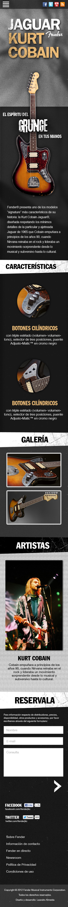

Botones cilíndricos
con triple estriado (volumen- volumen- tono), selector de tres posiciones, puente Adjusto-Matic™ en cromo negro.
Fender presenta uno de los modelos "signature" más característicos de su historia: la Kurt Cobain Jaguar, diseñada respetando los mínimos detalles de la particular y ajetreada Jaguar de 1965 que Cobain empuñara a principios de los años 90, cuando Nirvana reinaba en el rock y lideraba un movimiento sorprendente desde lo musical y subversivo hasta lo cultural.
con triple estriado (volumen- volumen- tono), selector de tres posiciones, puente Adjusto-Matic™ en cromo negro.
con marcadores de puntos perlados, pala Stratocaster con logo "spaghetti" al estilo de los años 50.
de aliso con acabado envejecido Road
Worn incluidos los herrajes.
humbucker DiMarzio® DP103 PAF 36th Anniversary, y pastilla de puente DP100 Super Distortion.
| Cuerpo: | Aliso (700700) Alder |
| Forma del cuerpo: | Jaguar® |
| Acabado del cuerpo: |
|
| Perfil del mástil: | Forma C |
| Número de trastes: | 22 |
| Tamaño de traste: | Médium Jumbo |
| Marcadores de posición: | Incrustaciones de marcadores de posición de punto nacarados |
| Radío del diapasón: | Radio 9.5" (241 mm) |
| Diapasón: | Palosanto |
| Material del mástil: | Arce |
| Acabado del mástil: | Gloss Urethane |
| Ancho de cejilla: | 1.650” (42 mm) |
| Longitud de la escala: | 24" (61 cm) |
| Configuración de pastilla: | H/H |
| Pastilla del puente: | Dimarzio® Super Distortion® DP100 |
| Neck Pickup: | DiMarzio® PAF DP-103 36th Anniversary Humbucking Pickup (Neck) |
| Selector de pastillas: | Selector de 3 posiciones: Posición 1: Pastilla del puente, Posición 2: Pastillas del puente y mástil, Posición 3: Pastilla del mástil |
| Controles: | Lead Circuit Controls (Slide Switch Down): Volume (Neck), Volume (Bridge), Master Tone; Rhythm Circuit Controls (Slide Switch Up): Two Thumbwheel Controls for Neck Pickup Volume and Tone |
| Model Name: | Kurt Cobain Jaguar® |
| Series: | Artist |
| Color / Part #: |
|
| Herrajes: | Níquel/Cromo |
| Puente: | Puente Adjusto-Matic™ con cordal de trémolo flotante tipo Vintage y botón de bloqueo de trémolo. |
| Hueso de las cuerdas: | Hueso sintético de cejuela |
| Clavijeros: | Gotoh® Cast/Sealed Tuning Machines |
| Interruptor auxiliar: | 2-Position On/Off Slide Switch for Switching Between "Lead" and "Rhythm" Circuits |
Cobain empuñó esta guitarra a principios de los años 90, cuando Nirvana reinaba en el rock y lideraba un movimiento sorprendente desde lo musical y subversivo hasta lo cultural.
Tommy es el primer guitarrista de la banda de Adam Lambert. Tocó el bajo para Adam durante todo el GlamNation. Es originalmente guitarrista pero estaba preparado para aprender partes en bajo para formar parte de la banda.
Copyright © 2012 Fender Musical Instruments Corporation. Todos los derechos reservados.
Diseño y desarrollo: Leandro Almeida
Versión movil en construcción
